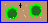

| Get Acquainted with Model through Hands-on Experiments |
We are now ready to start using the model to get familiar with it as well as to start discovering and learning facts about oak trees, gray squirrels, and red-tail hawks. If you haven't read the instructions on how to use the model, please read them before continuing.
 As mentioned before, you can start the model on a separate window by clicking on the symbol on the left. NOTE: Please note that the first stage of each experiment is called Observation, although in some cases it is only stating a problem or question.
-- Oak Trees Growth
Remember that you are sitting on the ground in the middle of the forest leaning on one of the huge trees. You notice that some trees look healthy, leafy, and their leaves have great green colors, while others don't look that good. Actually, some have quite a few yellowish leaves. Figure out what it takes to grow a healthy oak tree. Take a look at the setup in the population model, under the Oak Setup Menu heading, and take a guess at how much water a single oak tree needs to grow healthy. It might be easier to guess how much water the tree needs per day and multiply that by 365 days. Additionally, look at the list of all the available nutrients and guess which ones the trees might need. You may want to write down your guesses on a piece of paper to be able to compare them with the correct answers later. Define an experiment to verify your hypothesis and use the population model to run it. If you are unable to prove or disprove your hypothesis, and you are sure that you have read the instructions, you may have to re-define your experiment and try again. The experiment should have given you the answers to the problem. Did the answers match your guesses? A final comment regarding the nutrients is that people tend to call the nutrients plant food when in reality it has nothing to do with food. Food is something that an organism needs to process to extract minerals, proteins, etc. In the case of trees, the nutrients that are dissolved in the water are ready to get into the system to be used in the vital processes to spur growth and health. You should also be aware that not all trees need the same variety or amounts of nutrients.
-- Acorn Production
I hope that you had a successful first experiment. Let's now move to the second one. Since we will use the same format in all experiments, the descriptions will become less wordy.
You are still sitting on the ground and are now focusing on the acorns. You notice that the young trees don't have acorns while the much larger ones have many of them. Figure out how many years it takes before an oak tree starts producing acorns. Will it take one, two, three years? Take a guess. Come up with a hypothesis for the question. Define an experiment to corroborate your hypothesis and run it on the population model. The experiment should have given you the answer to the problem. Did the answer match your guess? -- More on Acorn Production
You are now trying to figure out the rate at which oak trees produce acorns. In other words, draw a graph that shows the number of acorns produced each year starting the year the seedling starts growing. We are interested in the shape of the curve as well as on the absolute numbers. Come up with a hypothesis for this question and draw the acorn production graph. This graph should plot the number of acorns produced on the Y-axis and the years (or time) on the X-axis. Define an experiment to confirm your hypothesis and run it on the population model. How close were your guesses to what the model showed? As you can see from the model, the yearly acorn production yields a perfect line when you graph the data. You can actually see the chart in the model itself.
Even though the acorn production in the model is very close to reality, the acorn production of a real oak tree is more complicated. Check out the Facts about Oak Trees page to see a closer approximation and a more complicated equation.
Last Updated:
Arcytech
Java Home
Page
Provide
Feedback